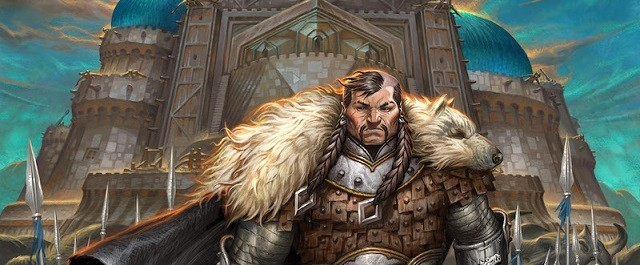

YARATILIŞ
Türk mitolojisinin en eski tabakalarından birini oluşturarak evrenin, insanın ve düzenin nasıl var olduğunu mistik bir dille açıklar. Henüz hiçbir şeyin var olmadığı, sadece sonsuz bir suyun bulunduğu evrende, Tanrı **Kayra Han** (veya Ülgen) ile ona eşlik eden "Kişi" arasındaki ilişkiyi temel alan bu anlatı; iyilik ile kötülüğün mücadelesini, dünyanın yaratılış aşamalarını ve insanın balçıktan var edilişini konu alır. Altay-Yenisey bölgesinden derlenen bu destan, Türklerin evrene bakış açısını, ruhani dünyasını ve varoluş sancılarını sembolik ögelerle günümüze taşıyan en temel mitolojik kaynaktır.
ALTAY DÖNEMİ
ALP ER TUNGA
MÖ 7. yüzyılda yaşamış ünlü Saka hükümdarı Alper Tunga’nın hayatını, kahramanlıklarını ve İranlılarla yaptığı bitmek bilmeyen savaşları konu alan, Türk edebiyatının en eski ve önemli epik anlatılarından biridir. İran kaynağı *Şehname*’de "Afrasiyab" adıyla anılan hükümdarın askeri dehası ve vatanseverliği üzerine kurulan bu destan, onun hileyle öldürülmesi üzerine yakılan ve Türk edebiyatının ilk ağıt örneklerinden kabul edilen **Alper Tunga Sagusu** ile hafızalara kazınmıştır. Bu metin, hem bozkır kültürünün savaşçı ruhunu hem de sevilen bir liderin kaybı sonrası duyulan derin toplumsal yası en saf haliyle günümüze taşır.
SAKA DÖNEMİ
OĞUZ KAĞAN
Hun İmparatoru Mete Han ile özdeşleştirilen efsanevi hükümdar Oğuz’un mucizevi doğumuyla başlayan ve cihan hakimiyeti ülküsünü temel alan en önemli Türk destanıdır. Henüz bebekken çiğ et yiyip kımız içerek hızla büyüyen, canavarları dize getiren ve gökten inen ışıklar içindeki kadınlarla evlenen Oğuz Kağan’ın, "Gökbörü" rehberliğinde dünyayı fethedişi anlatılır. Bu destan, sadece askeri bir başarı hikayesi değil; aynı zamanda devlet yönetimi, töre bilinci ve Oğuz’un ülkesini oğulları arasında "Gün", "Ay", "Yıldız", "Gök", "Dağ", "Deniz" şeklinde paylaştırmasıyla oluşan Türk boy teşkilatlanmasının manevi temelidir.
HUN DÖNEMİ
ERGENEKON
Türk milletinin büyük bir yenilgi sonrası hayatta kalan son fertlerinin sarp dağlarla çevrili, bereketli bir vadiye sığınışını ve orada dört yüzyıl boyunca çoğalıp güçlenişini anlatan bir yeniden doğuş hikayesidir. Vadinin artık kendilerine dar gelmesi üzerine, geçit vermeyen koca bir demir dağı kor ateşlerle eriterek yol açmalarını ve bir Bozkurt’un rehberliğinde özgürlüklerine kavuşmalarını konu alır. Her yıl 21 Mart'ta baharın gelişi ve özgürlüğün simgesi olarak kutlanan bu destan; Türklerin demirci kültürünü, esarete boyun eğmeyen savaşçı ruhunu ve küllerinden doğma iradesini temsil eden en güçlü sembollerden biridir.
GÖKTÜRK DÖNEMİ
BOZKURT
Türklerin yok olma tehlikesiyle karşı karşıya kaldığı bir dönemde, bir dişi kurdun rehberliğiyle yeniden var oluşlarını anlatan kutsal bir türeyiş efsanesidir. Düşman saldırısı sonrası hayatta kalan tek Türk çocuğunun bir dişi kurt tarafından kurtarılıp emzirilmesini ve ardından ondan doğan on boy ile Türk soyunun devam etmesini konu alır. Mağaralara sığınan ve bir kurdun koruyuculuğunda güçlenen bu nesil, Türk mitolojisindeki "kurt" sembolünün neden bir ata, yol gösterici ve koruyucu güç olarak kabul edildiğinin en temel dayanağıdır.
GÖKTÜRK DÖNEMİ
TÜREYİŞ
Uygur Türklerinin kökenini kutsal bir temele dayandıran, hakanın kızlarını insanlarla evlendirmeye kıyamayıp bir kurt suretindeki tanrı ile evlendirmesini konu alan bir yaratılış efsanesidir. Eski Hun hakanlarından birinin, iki kızının ancak tanrılarla evlenebileceğine inanarak onları ülkenin en uç noktasında yüksek bir kuleye kapatması ve Tanrı'nın bir kurt şeklinde gelerek bu evliliği gerçekleştirmesi destanın merkezini oluşturur. Bu birleşmeden doğan çocukların "kurt ruhlu", cesur ve gür sesli olduğuna inanılır; bu anlatı Türk toplumundaki kurttan türeme inancını ve soyun kutsallığı fikrini pekiştiren en önemli edebi belgelerden biridir.
UYGUR DÖNEMİ
GÖÇ
Uygur Türklerinin kutsal kabul ettikleri "Kutlu Dağ" adındaki bir kayayı Çinlilere vermeleri üzerine başlayan büyük kıtlığı ve toplu göçü konu alan dramatik bir anlatıdır. Uygur hakanının Çin prensesiyle evlenmesi karşılığında bu tılsımlı kayayı parçalatıp Çinlilere vermesiyle, ülkedeki tüm doğanın "Göç!" diye feryat etmeye başladığına ve bereketin kaçtığına inanılır. Bu olay sonucunda yurtlarını terk etmek zorunda kalan Uygurların Turfan bölgesine yerleşmelerini anlatan destan; vatan toprağının kutsallığını ve bir parça taşın bile feda edilmesinin toplumun geleceği üzerinde ne denli ağır bedeller yaratabileceğini vurgulayan tarihi bir derstir.
UYGUR DÖNEMİ
ŞU DESTANI
MÖ 4. yüzyılda Saka (İskit) hükümdarı Şu’nun, Makedonyalı Büyük İskender’in Asya seferi sırasında ona karşı verdiği mücadeleyi ve geri çekiliş sürecini anlatan tarihi bir destandır. İskender’in orduları yaklaşırken halkını korumak için doğuya çekilen Şu Kağan ile geride kalmayı tercih eden "Türkmen" boylarının ayrılışını ve ardından iki hükümdar arasındaki anlaşmayı konu alır. Bu anlatı, hem Türklerin kadim şehirleşme kültürüne (Balasagun örneği gibi) ışık tutması hem de "Türkmen" adının kökenine dair sunduğu mitolojik açıklamalarla Kaşgarlı Mahmud’un Dîvânu Lugâti't-Türk adlı eserinde yer bulan çok değerli bir belgedir.
SAKA DÖNEMİ
MANAS
Kırgız Türklerinin millî kültürünü, dünya görüşünü ve tarihini içinde barındıran, 500 binden fazla mısrasıyla dünyanın en hacimli destanıdır. Destan, Kırgızları tek bayrak altında toplayan efsanevi kahraman Manas, onun oğlu Semetey ve torunu Seytek’in nesiller boyu süren mücadelelerini, dış düşmanlara karşı verdikleri özgürlük savaşlarını konu alır. Bir "bozkır ansiklopedisi" niteliğinde olan bu eser; doğumdan ölüme, düğünlerden cenaze törenlerine kadar Türk boylarının geleneklerini, etik değerlerini ve toplumsal yapısını kuşaktan kuşağa aktaran devasa bir kültürel hazinedir.
KIRGIZ DÖNEMİ
SATUK BUĞRA HAN
Karahanlı hükümdarı Satuk Buğra Han'ın İslamiyet'i kabul edişini ve bu yeni dini Türkler arasında yaymak için verdiği mücadeleleri konu alan, Türk edebiyatının ilk İslami dönem destanıdır. Henüz doğmadan geleceği müjdelenen ve rüyasında gördüğü bir yol göstericinin etkisiyle Müslüman olan Satuk Buğra Han’ın, mucizelerle dolu hayatı ve "Abdülkerim" adını alarak verdiği din savaşları anlatılır. Mitolojik unsurların İslami motiflerle harmanlandığı bu destan, Türklerin inanç değişimini destansı bir dille tarihe not düşerken, aynı zamanda devletin resmi din değiştiriş sürecine manevi bir kimlik kazandırır.
KARAHANLI DÖNEMİ
BATTAL GAZİ
8. yüzyılda Emevî-Bizans savaşlarında büyük kahramanlıklar gösteren ve asıl adı Abdullah olan bir Türk-İslam kahramanının efsaneleşmiş hayatını anlatır. Malatya serdarı olan Battal Gazi, üstün savaş yeteneği, zekası ve sadık atı "Aşkar" ile Bizans ordularına ve kalelerine karşı tek başına adeta bir ordu gibi savaşan, İslamiyet'i yaymayı amaç edinen mücahit bir figürdür. Selçuklu ve Osmanlı dönemlerinde halk arasında büyük bir popülerlik kazanan bu anlatılar; Anadolu’nun Türkleşme ve İslamlaşma sürecindeki kahramanlık ruhunu, derviş-gazilik idealini ve halkın adalet arayışını temsil eden temel eserlerden biridir.
ANADOLU DÖNEMİ
KÖROĞLU
Bolu Beyi tarafından gözlerine mil çekilen babasının intikamını almak için dağlara çıkan Ruşen Ali’nin, namıdiğer Köroğlu’nun adalet mücadelesini konu alan epik bir halk anlatısıdır. Sadık atı Kırat ve "delikli demir" (tüfek) çıkınca mertliğin bozulduğuna dair meşhur söylemiyle özdeşleşen bu destan, halkın içinden çıkan bir kahramanın zulme ve haksızlığa karşı başkaldırısını temsil eder. Çamlıbel’de kurduğu ordusuyla ezilenlerin sesi olan Köroğlu, hem savaşçı kimliği hem de ozanlık yönüyle Türk dünyasının Balkanlar’dan Orta Asya’ya kadar uzanan en yaygın ve sevilen ortak kahramanlık figürlerinden biridir.
OSMANLI DÖNEMİ
DANİŞMEND GAZİ
Anadolu’nun fethi ve Türkleşme sürecini konu alan, 11. yüzyılın kahramanı Melik Danişmend Gümüştekin Gazi’nin hayatı etrafında şekillenen bir destan-tarih niteliğindedir. Battal Gazi’nin soyundan geldiğine inanılan Danişmend Gazi’nin, Orta ve Kuzey Anadolu’da (özellikle Tokat, Amasya, Niksar bölgelerinde) Bizans ve Haçlı ordularına karşı verdiği cihat mücadelelerini, kaleleri fethini ve gösterdiği kerametleri anlatır. 13. yüzyılda yazıya geçirilen bu eser, Türklerin Anadolu’daki yerleşik hayata geçişini, şehir kültürünü ve gazilik ruhunu sade bir dille ölümsüzleştiren, tarihle efsanenin iç içe geçtiği en önemli milli kaynaklardan biridir.
SELÇUKLU DÖNEMİ
EDİGE
14. yüzyılın sonunda Altın Orda Devleti'nin ünlü emiri ve Nogay Türklerinin atası kabul edilen Edige Mirza'nın hayatı ile kahramanlıklarını konu alan tarihi bir destandır. Destanda, Edige’nin Toktamış Han ile olan iktidar mücadelesi, halkını bir arada tutma çabası ve bilgeliği, yer yer mitolojik unsurlarla beslenerek anlatılır. Altın Orda'nın parçalanma sürecindeki trajik olaylara ışık tutan bu anlatı; Kazak, Tatar, Nogay ve Kırım Türkleri arasında oldukça yaygın olup, bozkır devlet geleneğini ve halkın liderine duyduğu derin bağlılığı yansıtan en önemli kültürel bağlardan biridir.
ALTIN ORDA DÖNEMİ
SARI SALTUK
13. yüzyılda yaşamış ünlü bir gazi-derviş olan Sarı Saltuk'un hayatını, Anadolu ve Balkanlar'daki İslamlaşma sürecinde gösterdiği kerametleri ve kahramanlıkları anlatan devasa bir eserdir. Fatih Sultan Mehmet’in oğlu Şehzade Cem’in talimatıyla Ebülhayr Rumi tarafından derlenen bu anlatı; Sarı Saltuk’un bir yandan kılıç sallayan bir alp, diğer yandan gönülleri fetheden bir eren olarak ejderhalarla, devlerle ve düşman ordularıyla mücadelesini konu alır. Türklerin Avrupa içlerine ilerleyişinin manevi zeminini oluşturan bu destan, içerisinde barındırdığı tarihi bilgiler, folklorik ögeler ve coğrafi ayrıntılarla Türk kültür tarihinin en önemli "menakıbnâme" örneklerinden biri kabul edilir.
BEKLERBEYİ DÖNEMİ
CENGİZNÂME
Moğol İmparatorluğu'nun kurucusu Cengiz Han’ın hayatını, soyunu ve fetihlerini Türk-Moğol perspektifiyle ele alan, tarihle efsanenin iç içe geçtiği epik bir anlatıdır. Cengiz Han’ın doğuşu sırasında elinde kan pıhtısıyla doğması gibi mitolojik unsurlardan başlayarak, Orta Asya’daki boyları tek bayrak altında toplamasını ve devasa bir imparatorluk kurmasını konu alır. Orta Asya Türk boyları, özellikle Kazak ve Tatar Türkleri arasında Cengiz Han’ı bir "Türk hakanı" gibi benimseyen bu destan; devlet kurma geleneğini, bozkır yasalarını ve liderlik karizmasını kutsal bir dille ölümsüzleştirerek Türk dünyasının ortak hafızasında önemli bir yer edinmiştir.
MOĞOL-TÜRK DÖNEMİ